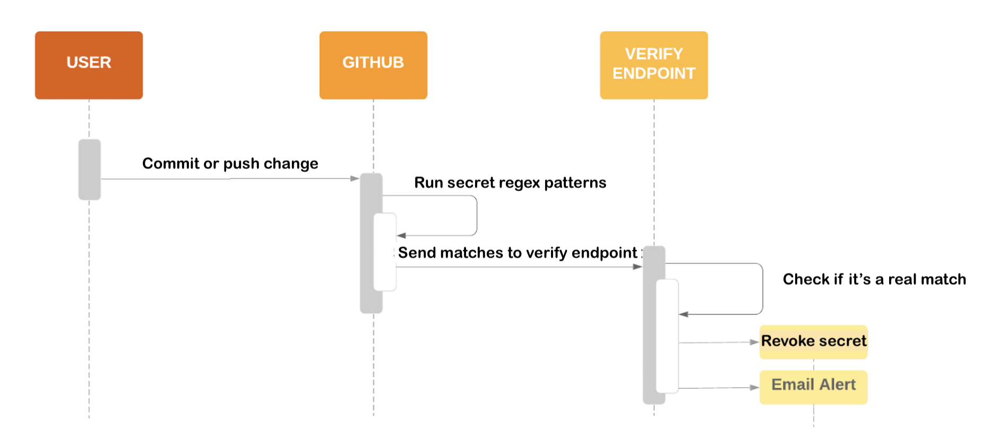
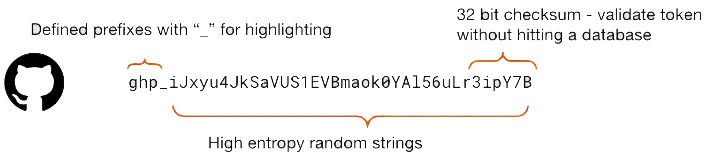

As a service provider, you can partner with GitHub to have your secret token formats secured through secret scanning, which searches for accidental commits of your secret format and can be sent to a service provider's verify endpoint.
GitHub scans repositories for known secret formats to prevent fraudulent use of credentials that were committed accidentally. Secret scanning happens by default on public repositories and public npm packages. Repository administrators and organization owners can also enable secret scanning on private repositories. As a service provider, you can partner with GitHub so that your secret formats are included in our secret scanning.
When a match of your secret format is found in a public source, a payload is sent to an HTTP endpoint of your choice.
When a match of your secret format is found in a private repository configured for secret scanning, then repository admins and the committer are alerted and can view and manage the secret scanning result on GitHub. For more information, see Manage secret scanning alerts.
This article describes how you can partner with GitHub as a service provider and join the secret scanning partner program.
The following diagram summarizes the secret scanning process for public repositories, with any matches sent to a service provider's verify endpoint. A similar process sends service providers tokens exposed in public packages on the npm registry.

To get the enrollment process started, email secret-scanning@github.com.
You will receive details on the secret scanning program, and you will need to agree to GitHub's terms of participation before proceeding.
To scan for your secrets, GitHub needs the following pieces of information for each secret that you want included in the secret scanning program:
A unique, human-readable name for the secret type. We'll use this to generate the Type value in the message payload later.
A regular expression which finds the secret type. We recommend you are as precise as possible, because this will help reduce the number of false positives. Some best practices for high quality, identifiable secrets are:

A test account for your service. This will allow us to generate and analyze examples of the secrets, further reducing false positives.
The URL of the endpoint that receives messages from GitHub. The URL doesn't have to be unique for each secret type.
Send this information to secret-scanning@github.com.
Create a public, internet accessible HTTP endpoint at the URL you provided to us. When a match of your regular expression is found publicly, GitHub will send an HTTP POST message to your endpoint.
[
{
"token":"NMIfyYncKcRALEXAMPLE",
"type":"mycompany_api_token",
"url":"https://github.com/octocat/Hello-World/blob/12345600b9cbe38a219f39a9941c9319b600c002/foo/bar.txt",
"source":"content"
}
]
The message body is a JSON array that contains one or more objects, with each object representing a single secret match. Your endpoint should be able to handle requests with a large number of matches without timing out. The keys for each secret match are:
The list of valid values for source are:
contentcommitpull_request_titlepull_request_descriptionpull_request_commentissue_titleissue_descriptionissue_commentdiscussion_titlediscussion_bodydiscussion_commentcommit_commentgist_contentgist_commentwiki_contentwiki_commitnpmmanual_submissionaction_logsunknownA source of action_logs means the match was found in the logs of a GitHub Actions workflow run in a public repository.
The HTTP request to your service will also contain headers that we strongly recommend using
to validate the messages you receive are genuinely from GitHub, and are not malicious.
The two HTTP headers to look for are:
Github-Public-Key-Identifier: Which key_identifier to use from our APIGithub-Public-Key-Signature: Signature of the payloadYou can retrieve the GitHub secret scanning public key from https://api.github.com/meta/public_keys/secret_scanning and validate the message using the ECDSA-NIST-P256V1-SHA256 algorithm. The endpoint
will provide several key_identifier and public keys. You can determine which public
key to use based on the value of Github-Public-Key-Identifier.
Note
When you send a request to the public key endpoint above, you may hit rate limits. To avoid hitting rate limits, you can use a personal access token (classic) (no scopes required) or a fine-grained personal access token (only the automatic public repositories read access required) as suggested in the samples below, or use a conditional request. For more information, see Best practices for using the REST API.
Note
The signature was generated using the raw message body. So it's important you also use the raw message body for signature validation, instead of parsing and stringifying the JSON, to avoid rearranging the message or changing spacing.
Sample HTTP POST sent to verify endpoint
POST / HTTP/2
Host: HOST
Accept: */*
Content-Length: 104
Content-Type: application/json
Github-Public-Key-Identifier: bcb53661c06b4728e59d897fb6165d5c9cda0fd9cdf9d09ead458168deb7518c
Github-Public-Key-Signature: MEQCIQDaMKqrGnE27S0kgMrEK0eYBmyG0LeZismAEz/BgZyt7AIfXt9fErtRS4XaeSt/AO1RtBY66YcAdjxji410VQV4xg==
[{"source":"commit","token":"some_token","type":"some_type","url":"https://example.com/base-repo-url/"}]
The following code snippets demonstrate how you could perform signature validation.
The code examples assume you've set an environment variable called GITHUB_PRODUCTION_TOKEN with a generated personal access token to avoid hitting rate limits. The personal access token does not need any scopes/permissions.
Validation sample in Go
package main
import (
"crypto/ecdsa"
"crypto/sha256"
"crypto/x509"
"encoding/asn1"
"encoding/base64"
"encoding/json"
"encoding/pem"
"errors"
"fmt"
"math/big"
"net/http"
"os"
)
func main() {
payload := `[{"source":"commit","token":"some_token","type":"some_type","url":"https://example.com/base-repo-url/"}]`
kID := "bcb53661c06b4728e59d897fb6165d5c9cda0fd9cdf9d09ead458168deb7518c"
kSig := "MEQCIQDaMKqrGnE27S0kgMrEK0eYBmyG0LeZismAEz/BgZyt7AIfXt9fErtRS4XaeSt/AO1RtBY66YcAdjxji410VQV4xg=="
// Fetch the list of GitHub Public Keys
req, err := http.NewRequest("GET", "https://api.github.com/meta/public_keys/secret_scanning", nil)
if err != nil {
fmt.Printf("Error preparing request: %s\n", err)
os.Exit(1)
}
if len(os.Getenv("GITHUB_PRODUCTION_TOKEN")) == 0 {
fmt.Println("Need to define environment variable GITHUB_PRODUCTION_TOKEN")
os.Exit(1)
}
req.Header.Add("Authorization", "Bearer "+os.Getenv("GITHUB_PRODUCTION_TOKEN"))
resp, err := http.DefaultClient.Do(req)
if err != nil {
fmt.Printf("Error requesting GitHub signing keys: %s\n", err)
os.Exit(2)
}
decoder := json.NewDecoder(resp.Body)
var keys GitHubSigningKeys
if err := decoder.Decode(&keys); err != nil {
fmt.Printf("Error decoding GitHub signing key request: %s\n", err)
os.Exit(3)
}
// Find the Key used to sign our webhook
pubKey, err := func() (string, error) {
for _, v := range keys.PublicKeys {
if v.KeyIdentifier == kID {
return v.Key, nil
}
}
return "", errors.New("specified key was not found in GitHub key list")
}()
if err != nil {
fmt.Printf("Error finding GitHub signing key: %s\n", err)
os.Exit(4)
}
// Decode the Public Key
block, _ := pem.Decode([]byte(pubKey))
if block == nil {
fmt.Println("Error parsing PEM block with GitHub public key")
os.Exit(5)
}
// Create our ECDSA Public Key
key, err := x509.ParsePKIXPublicKey(block.Bytes)
if err != nil {
fmt.Printf("Error parsing DER encoded public key: %s\n", err)
os.Exit(6)
}
// Because of documentation, we know it's a *ecdsa.PublicKey
ecdsaKey, ok := key.(*ecdsa.PublicKey)
if !ok {
fmt.Println("GitHub key was not ECDSA, what are they doing?!")
os.Exit(7)
}
// Parse the Webhook Signature
parsedSig := asn1Signature{}
asnSig, err := base64.StdEncoding.DecodeString(kSig)
if err != nil {
fmt.Printf("unable to base64 decode signature: %s\n", err)
os.Exit(8)
}
rest, err := asn1.Unmarshal(asnSig, &parsedSig)
if err != nil || len(rest) != 0 {
fmt.Printf("Error unmarshalling asn.1 signature: %s\n", err)
os.Exit(9)
}
// Verify the SHA256 encoded payload against the signature with GitHub's Key
digest := sha256.Sum256([]byte(payload))
keyOk := ecdsa.Verify(ecdsaKey, digest[:], parsedSig.R, parsedSig.S)
if keyOk {
fmt.Println("THE PAYLOAD IS GOOD!!")
} else {
fmt.Println("the payload is invalid :(")
os.Exit(10)
}
}
type GitHubSigningKeys struct {
PublicKeys []struct {
KeyIdentifier string `json:"key_identifier"`
Key string `json:"key"`
IsCurrent bool `json:"is_current"`
} `json:"public_keys"`
}
// asn1Signature is a struct for ASN.1 serializing/parsing signatures.
type asn1Signature struct {
R *big.Int
S *big.Int
}
Validation sample in Ruby
require 'openssl'
require 'net/http'
require 'uri'
require 'json'
require 'base64'
payload = <<-EOL
[{"source":"commit","token":"some_token","type":"some_type","url":"https://example.com/base-repo-url/"}]
EOL
payload = payload
signature = "MEQCIQDaMKqrGnE27S0kgMrEK0eYBmyG0LeZismAEz/BgZyt7AIfXt9fErtRS4XaeSt/AO1RtBY66YcAdjxji410VQV4xg=="
key_id = "bcb53661c06b4728e59d897fb6165d5c9cda0fd9cdf9d09ead458168deb7518c"
url = URI.parse('https://api.github.com/meta/public_keys/secret_scanning')
raise "Need to define GITHUB_PRODUCTION_TOKEN environment variable" unless ENV['GITHUB_PRODUCTION_TOKEN']
request = Net::HTTP::Get.new(url.path)
request['Authorization'] = "Bearer #{ENV['GITHUB_PRODUCTION_TOKEN']}"
http = Net::HTTP.new(url.host, url.port)
http.use_ssl = (url.scheme == "https")
response = http.request(request)
parsed_response = JSON.parse(response.body)
current_key_object = parsed_response["public_keys"].find { |key| key["key_identifier"] == key_id }
current_key = current_key_object["key"]
openssl_key = OpenSSL::PKey::EC.new(current_key)
puts openssl_key.verify(OpenSSL::Digest::SHA256.new, Base64.decode64(signature), payload.chomp)
Validation sample in JavaScript
const crypto = require("crypto");
const axios = require("axios");
const GITHUB_KEYS_URI = "https://api.github.com/meta/public_keys/secret_scanning";
/**
* Verify a payload and signature against a public key
* @param {String} payload the value to verify
* @param {String} signature the expected value
* @param {String} keyID the id of the key used to generated the signature
* @return {void} throws if the signature is invalid
*/
const verify_signature = async (payload, signature, keyID) => {
if (typeof payload !== "string" || payload.length === 0) {
throw new Error("Invalid payload");
}
if (typeof signature !== "string" || signature.length === 0) {
throw new Error("Invalid signature");
}
if (typeof keyID !== "string" || keyID.length === 0) {
throw new Error("Invalid keyID");
}
const keys = (await axios.get(GITHUB_KEYS_URI)).data;
if (!(keys?.public_keys instanceof Array) || keys.length === 0) {
throw new Error("No public keys found");
}
const publicKey = keys.public_keys.find((k) => k.key_identifier === keyID) ?? null;
if (publicKey === null) {
throw new Error("No public key found matching key identifier");
}
const verify = crypto.createVerify("SHA256").update(payload);
if (!verify.verify(publicKey.key, Buffer.from(signature, "base64"), "base64")) {
throw new Error("Signature does not match payload");
}
};
For secret scanning found publicly, you can enhance your secret alert service to revoke the exposed secrets and notify the affected users. How you implement this in your secret alert service is up to you, but we recommend considering any secrets that GitHub sends you messages about as public and compromised.
We collect feedback on the validity of the detected individual secrets in partner responses. If you wish to take part, email us at secret-scanning@github.com.
When we report secrets to you, we send a JSON array with each element containing the token, type identifier, and commit URL. When you send us feedback, you send us information about whether the detected token was a real or false credential. We accept feedback in the following formats.
You can send us the raw token:
[
{
"token_raw": "The raw token",
"token_type": "ACompany_API_token",
"label": "true_positive"
}
]
You may also provide the token in hashed form after performing a one way cryptographic hash of the raw token using SHA-256:
[
{
"token_hash": "The SHA-256 hashed form of the raw token",
"token_type": "ACompany_API_token",
"label": "false_positive"
}
]
A few important points:
Note
Our request timeout is set to be higher (that is, 30 seconds) for partners who provide data about false positives. If you require a timeout higher than 30 seconds, email us at secret-scanning@github.com.